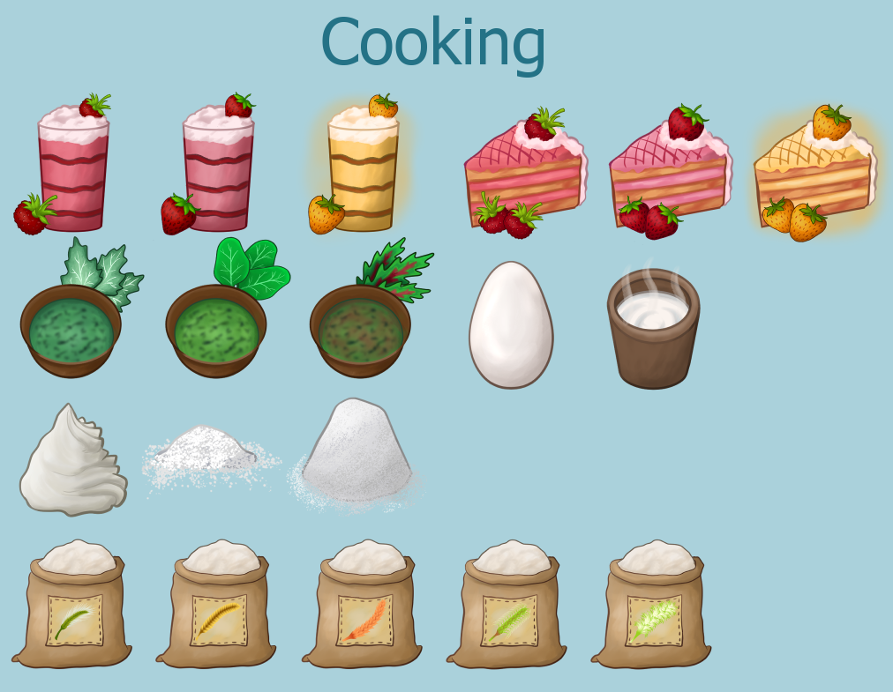
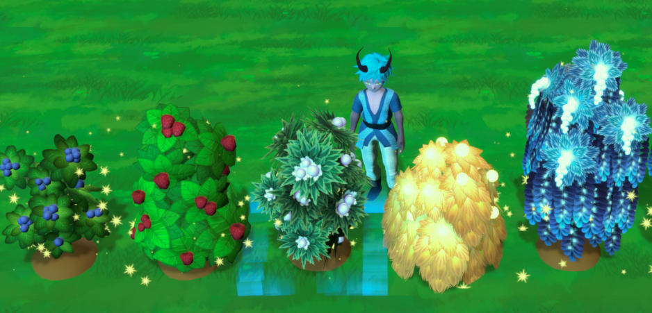
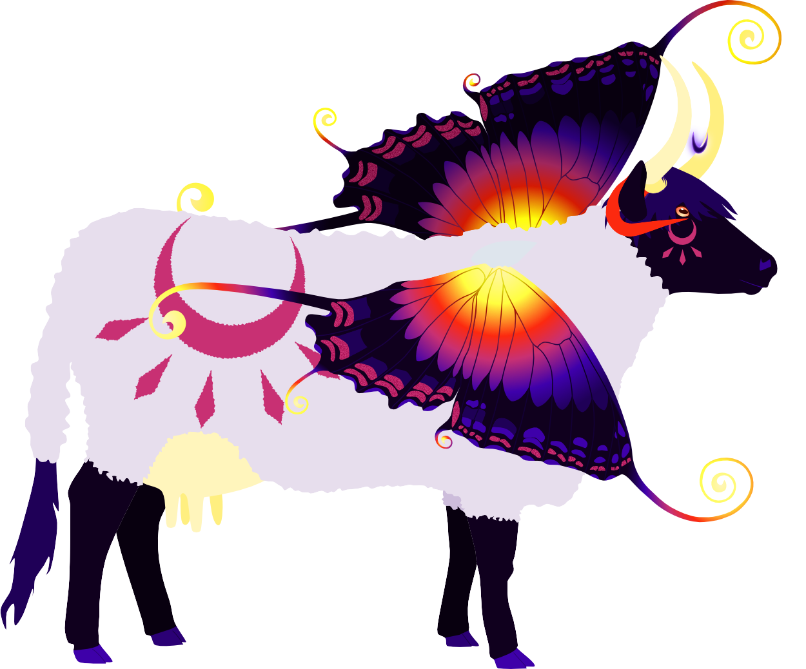
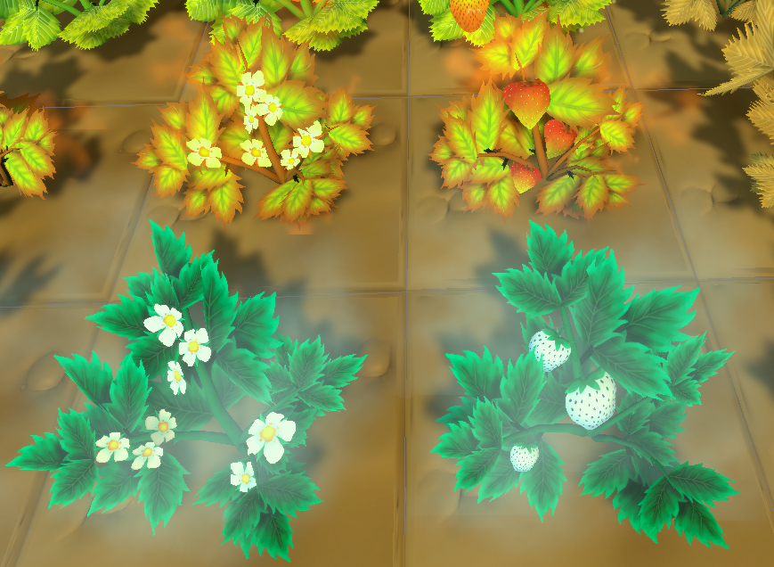

15. Juni 2022 - DEMO-VERSION!

Hallo, magische Farmfreunde!
In den letzten zwei Wochen sind Entscheidungen gefällt worden, die Euch vielleicht freuen. Ursprünglich wollten wir den
Fokus auf das Implementieren aller Kerninhalte in diesem Jahr legen, aber nun, da der Spielzyklus um die Farm fertig ist,
legen wir den Fokus auf das Erstellen einer Demo-version!
Das Züchten der Tiere wird dabei noch fehlen, ansonsten sind alle Inhalte rund um das Farmleben geplant, inklusive dem Abbauen
von Erzen und Kristallen aus der Mine und Angeln von ersten Fischen und ihren Farbvarianten.
Handwerklich könnt ihr das normale Handwerk ausüben, kochen und Tränke brauen. Der Dekorationsmodus wird eventuell gänzlich
rausgenommen werden oder nur beschränkt verfügbar sein, da die aktuellen, dekorativen Objekte nur Platzhalter sind und wir den
Fokus der Assets auf den Kern-Gameplayloop legen.
 Geplant ist, die Demo im September fertig gestellt zu haben. Dann wird unser erster Spieletest bei einer öffentlichen
Spiele-Veranstaltung in Schweden stattfinden und zum Steam-Next-Fest im Oktober wird sie dann auf Steam online zur Verfügung
stehen.
Geplant ist, die Demo im September fertig gestellt zu haben. Dann wird unser erster Spieletest bei einer öffentlichen
Spiele-Veranstaltung in Schweden stattfinden und zum Steam-Next-Fest im Oktober wird sie dann auf Steam online zur Verfügung
stehen.
Der Zeitrahmen ist recht eng, aber wir sind zuversichtlich, Euch erste Einblicke mit dieser Demoversion im Oktober gewähren zu können!
Die Demoversion kann als eine Art Pre-Alpha-Version angesehen werde und natürlich wird sich zur fertigen Version dann noch einiges ändern.
Was wurde in den letzten zwei Wochen gemacht?

- Steampage überarbeitet (WIP - aktuell arbeitet unser Char-artist an den Steam-capsules).
- Konzeptplanung für die Demoversion.
- Altarfunktion fertiggestellt.
- Tiere können mittels einer Glocke am Stall aus dem Stall und in den Stall geschickt werden
- Schneiderei überarbeitet
- Kochen: erste Rezepte inklusive Icons eingefügt, 3D-model der Kochstelle begonnen
- Erze T1-T3 eingefügt (3D-Model und Icon)
 Planung bis zum 1.Juli:
Planung bis zum 1.Juli: Für die Demoversion sollen folgende Bereiche fertig implementiert werden:
- Kochen
- Mine & Schmelzen von Erzen
Daher... weiter geht's!
Liebe Grüße,
Euer Magical Harvest-Team
Isa & Marie
1. Juni 2022 - Tiere und Schreine
 Isa:
Isa:
Hallo, magische Farmfreunde!
So produktiv die Wochen davor waren, waren die letzten zwei nicht allzu produktiv. Die Tiere sind etwas aufwendiger zu implementieren als erwartet und meine
Motivation war auch nicht ganz so hoch wie davor. Aber nun gut, man kann nicht immer hoch motiviert sein. Dafür bin ich etwas entspannter – hat also etwas Gutes.
Zu allererst: wir haben den ersten Steam-devlog / news-Eintrag! ->
Steam: Juni-News
Und dann direkt zu den neuen GameFeatures. Zuerst die Tiere:
- Es gibt 2 Typen von Ställen: für kleine Tiere und große Tiere.
- Die Stalltypen besitzen 3 Größen, je eine für 5, 10 und 15 Tiere.
- Tiere können Ställen zugeordnet werden.
- Es gibt männliche und weibliche Tiere, die je nach Geschlecht und Tierart Produkte produzieren oder fallen lassen, sofern sie ausgewachsen sind.
- Tiere werden nach x Tagen erwachsen.
- Tiere sind in Carnivore und Herbivore unterteilt und brauchen entsprechend Futter.
- Tiere brauchen eine Einheit Futter am Tag.
- Die Ställe können mit einem Silo verbunden werden, wodurch das benötigte Futter automatisch im Stall aufgefüllt wird.
- Das Silo kann beide Futtersorten beinhalten.
- Mit den Tieren kann interagiert werden, um ihre Freundespunkte zu erhöhen.
- Man kann den Tieren Leckerli geben, um ihre Freundespunkte zu erhöhen.
- Tiere werden nach zufälligen x Tagen schmutzig und wollen mit einer Bürste gesäubert werden.
- Schafe müssen mit einer Schere geschoren werden und sind zu Testzwecken unter die Fleischfresser gegangen.
- Hühner lassen Eier fallen, werden die Eier nicht eingesammelt, verschwinden sie über Nacht.

- Schreine können mit Baumaterialien 3x ausgebaut werden.
- Mit jeder Ausbaustufe kann man ein zusätzliches Produkt liefern.
- Der Schrein gibt mittels Icons vor, welche Produkte der Gott heute geliefert haben möchte. Es sind demnach (ingame) tägliche Lieferaufgaben.
- Mit jeder Opfergabe steigen die Freundschaftspunkte des entsprechenden Gottes.
Außerdem sind drei weitere 3D-Models für die Büsche T3-T5 hinzugekommen: Flüsterbeere, Sonnebeere und Mondbeere.
Marie hat eine Stufe des Stalls konzipiert sowie theoretisch die Paarung der Tiere ausgearbeitet.

Ausblick: Da ich die ersten Junitage auf Reise bin, wird der Fokus bei mir und auch bei Marie im ersten Teil des Monats auf Konzepte liegen. Charakter-konzepte sowie Design verschiedener Dinge.
Außerdem werden wir nun monatlich auf Steam den Fortschritt des Spiels als News veröffentlichen.
Die Arbeit an den neuen Capsules auf Steam geht leider nur langsam voran, aber wir werden nach und nach Verbesserungen der Steam-page in Angriff nehmen.
Aktuell haben wir etwas mehr als 400 Wishlist-Einträge. Immerhin ein Anfang, dafür, dass wir bisher kaum was zum Zeigen hatten. Langsam füllt sich jedoch das Spiel.
Ansonsten werde ich ein paar Dinge im Spiel überarbeiten bzw. erweitern. Zum Beispiel werden wir zwei verschiedene Düngerarten einbauen. Das Handwerk Schneiderei wird etwas umgeändert und auf das allgemeine Handwerkssystem angepasst.
Nach der Überarbeitung wird dann der Fokus wieder auf den Tieren liegen.
Wenn ihr mehr wissen wollt oder euch etwas anderes besonders interessiert, schaut bei unserem Discord vorbei und chattet mit uns. Wir freuen uns über Interessierte!
Bis zum nächsten Mal!
15. Mai 2022 - Viele neue kleine Features!
Isa:
Neu: Das Spiel wächst langsam, aber stetig. Die letzten zwei Wochen waren recht produktiv in Bezug auf neue Implementationen.
- Bäume und Büsche: Bäume und Büsche können auf der Farm ohne Farmboden platziert werden und brauchen nicht bewässert zu werden. Sie sind ganzjährig.
- Die Buscharten Blaubeere (T1) und Himbeere (T2) wurden implementiert (3D-Modelle), außerdem 3 weitere T-Stufen für die Büsche konzipiert.
- Es existieren nun 100 Tränke incl. deren Icons im Spiel.
- Der Farmboden kann nun gedüngt werden (mit Dünger oder Zauber).
- Samen können mit einem Evolutions-Gegenstand zu einer höheren Tier-Stufe entwickelt werden (max. T5). Dafür wird ein Samen und ein Trank einer best. Stufe benötigt. Je höher die Stufe des Tranks, desto mehr Samen erhält man unter Umständen.
- Feldfrüchte etc. können in Samen umgewandelt werden. Auch gefundene Pflanzen, die in den Wäldern zu finden sind.
- 5 verschiedene Gras-typen sind implementiert (T1-T5), incl. 3D-Modelle und Icons. Das Gras kann mit einer Sense oder dem entsprechenden Zauber geschnitten werden.
- 5 verschiedene Stein-typen sind implementiert (T1-T5), incl. vorläufiger 3D-Modelle. Um Steine zu zerstören braucht man einen Hammer oder einen entsprechenden Zauber.
- Icons für die verschiedenen Samentypen wurden entworfen (Feldfrüchte, Blumen, Kräuter, Büsche/Bäume).
- 3D-Modelle für die Kräuter T1: Minze, Silberblatt und T2: Koriander und Löwenzahn wurden implementiert.
- Tierfutter (Gras) wurde implementiert und kann angebaut und geerntet werden.
- Die Basis für einen Tier-Stall und ein Silo wurde implementiert und befindet sich in Entwicklung.
- Alle Tierarten (bis auf eine) wurden fertig konzipiert.
Was fehlt noch? Hier die großen, groben Blöcke der fehlenden Mechaniken:
- Tiere und deren Verhalten und Interaktionen (als nächstes geplant)
- Paarung von Tieren
- Wildtiere
- NPCs und deren künstliche Intelligenz (geplant ab circa mitte Juni-Juli)
- Händler
- Schreine und Götter
- Magiesystem in der Welt
- Stadt und deren Fraktionen mit dem Rufsystem
- Feste und Minispiele

Ausblick: Programmiermäßig liegt der Fokus nun auf den Tierställen, den Farmtieren und deren Versorgung. Dies wird wahrscheinlich die vollen nächsten 2 Wochen in Anspruch nehmen.
Nebenbei stehen weiter Konzepte und evtl. 3D-Modelle für verschiedene Dinge an. z.B. weitere Bäume oder weitere Feldfrüchte oder Kräuter. Danach habe ich eine Woche Urlaub, in der ich wahrscheinlich nur an der Patreon-Seite und Steam-Seite arbeiten werde.
01. Mai 2022 - Alchemie und Magie
Isa:
Neu: Und wieder sind 2 Wochen vorbei. Die letzten zwei Wochen waren von Fortschritt gesegnet! Neben Tränken mit Statuseffekten wie z.B. zeitweise schneller laufen, exp-erhöhung, sind nun auch Tränke im Spiel, mit denen man Magie wirken kann. Und es ist toll mit ihnen die Farm freizuräumen oder die Felder zu bearbeiten.
Demnach ist nun auch (endlich) Alchemie im Spiel. Das vorherige Handwerk-system wird auch noch durch das neue Prinzip ersetzt. Zusammen mit Alchemie ist auch Kochen und Schneiderei implementiert (allerdings noch ohne richtige Rezepte).
Die ersten 10 Kräuter haben ihren Weg ins Spiel gefunden – zumindest in Item form für das Inventar. 3D-modelle stehen noch aus.
Aktuell sind 6 verschiedene Zauber im Spiel (Namen und aktuelle visuelle Effekte sind Platzhalter).
- Windzauber -> zum Abernten von Feldfrüchten
- Sichelzauber -> zum Schneiden von Gras auf der Farm (wir haben jetzt auch Gras!)
- „Smash“-zauber -> zum Zerstören von Steinen auf der Farm (ja, Steine existieren jetzt auch)
- Sturmzauber -> Zerstört Bäume und Farmpflanzen bzw Farmerde
- Regenzauber -> bewässert Farmerde
- Erdzauber -> gräbt den Boden zu Farmerde um
Marie hat weitere Tier-konzepte gemacht und es verspricht, sehr interessant zu werden.
Ansonsten sind einige kleinere Verbesserungen auf Basis unseres Spieltests von Mitte April vorgenommen worden wie z. B. eine einfache Rückmeldung, wenn ein Item eingesammelt wird.
 Ausblick: Der nächste Schritt ist das Evolutionssystem der Pflanzen und die Bodenqualität bzw. die Qualität der Farmpflanzen. Zeitlich ist es aktuell etwas enger, da ich nebenher auch intensiver Schwedisch lerne. Daher gehe ich davon aus, dass es auch cirka zwei Wochen dauern wird, dies richtig zu implementieren.
Zusätzlich gönne ich mir etwas mehr Freizeit und habe meine rund 70h Woche auf cirka 55-60h arbeit pro Woche reduziert. Generell sieht der zeitliche programmiertechnische Fortschritt der Features allerdings sehr gut aus!
Im Mai wird auch die Steam-page überarbeitet! Aktuell haben wir knapp über 300 Wishlisteinträge. Zusätzlich ist eine Patreon-Seite geplant.
15. April 2022 - Crafting
 Isa:
Isa:
Neu:
Kochen und Alchemie fehlt noch, allerdings ist das Crafting fertig. Ich hatte weniger Zeit, neue Inhalte zu implementieren,
da ich das Input-System neu überarbeitet habe, da dies aufgrund eines Engine-Updates nicht mehr funktionierte.
Jetzt ist allerdings alles wieder mit dem Controller spielbar und auch einige Bugs behoben, was in der Zukunft
vorteilhaft ist.
 Das erste Farmhaus-Model ist fertig und auch die T4- und T5-Erdbeermodelle (wobei T5 grafisch noch bearbeitet werden wird).
Der Tag-Nacht Zyklus wurde überarbeitet und die Lichtverhältnisse verbessert.
Das erste Farmhaus-Model ist fertig und auch die T4- und T5-Erdbeermodelle (wobei T5 grafisch noch bearbeitet werden wird).
Der Tag-Nacht Zyklus wurde überarbeitet und die Lichtverhältnisse verbessert.
Wir haben auch ein paar Fische mehr, unter anderem einen Seestern.

Am 16.04.2022 haben wir einen ersten Playtest mit Außenstehenden und sind sehr gespannt!
Dabei wird es vor allem um das Angeln und Farmen gehen.
Ausblick:
In der 2. Aprilhälfte steht definitiv das Kochen und Alchemie auf dem Plan. Darauf aufbauend wird die
Verarbeitung von Feldfrüchten in Samen erfolgen, was gleichzeitig die Möglichkeit bringt, die Samen eine
Tier-Stufe aufzuwerten. Für die nächste Zeit steht mehr das Implementieren von neuen Features im Vordergrund.
01. April 2022 - Early development trailer
 Isa:
Isa:
Neu:
Ich habe mir eine Woche Pause gegönnt, in der eher Charakter-konzepte im Vordergrund standen (u.a. der Kleidungsstil der Rassen).
Außerdem habe ich mit der 3D-Erstellung und Texturierung vom ersten Farmhaus begonnen.
Die Aktion „das Spiel visuell hübscher machen“ ist abgeschlossen. Natürlich ist es noch keine Endgraphik, aber wir
nähern uns der Richtung des Stils.
Das Angeln ist nun erst einmal semi-fertig. Es gibt nun zwei Angel-modi: einmal mit Mini-game, das die Chance erhöht,
höherwertige Fische zu fangen und einmal ohne Mini-game. Außerdem können nun auch einfache Objekte geangelt werden
(der obligatorische Stiefel zum Beispiel).
Auf Basis der visuellen Anpassung haben wir einen Trailer erstellt, der den aktuellen Stand des Spiels zeigt.
Es ist das Ergebnis aus 4 Monaten Arbeit, wobei natürlich die ganzen Hintergrundarbeiten nicht sichtbar sind.
Den Trailer findet ihr auf der Startseite der Homepage ( Home).
Charakter-artist:
Wir haben jetzt einen Charakter-artist, der uns die Charaktere zeichnen wird!
Arstation: Ulfenheim
Normalerweise hat er einen etwas dunkleren Stil, doch für Magical Harvest hat er seinen Stil angepasst und
wird uns wundervolle Artworks erschaffen. Einen der Testcharaktere könnt Ihr unserem Trailer sehen.
Auf Basis seines Stils wird jetzt erst einmal die Steam-page überarbeitet und die ganzen Steam-Bilder angepasst.
Was kommt als nächstes?:
Bis Mitte April ist geplant, die ganzen Herstellungs-elemente ins Spiel zu implementieren. Damit sind das normale
Herstellen, Kochen und Alchemie gemeint. Da die neu implementierten Spielelemente direkt mit dem neuen UI-Stil gemacht
werden, dauert die Implementation nun auch etwas länger.
Außerdem möchte ich das erste Farmhaus natürlich fertig machen sowie weitere Feldfrüchte-Modelle. Ich werde
wohl wieder beim Frühling beginnen und auch direkt die T4 und T5-Modelle machen, die ich bisher weggelassen habe.
Ich will meine Mond-kartoffel haben!
Marie wird weiterhin Fische kreieren und die Story weiter designen.


15. März 2022 – Steam page und UI
Isa:
Unsere Steampage ist da!
Wishlist und folgt uns auf Steam! Das hilft uns und dem ganzen Projekt!
Magical Harvest auf Steam

Aktuelles: Am letzten Wochenende habe ich ein Bild fertig gestellt, das erst mal für unsere Steampage verwendet werden kann. Demnach habe ich auch die Rohfassung der Steampage fertig erstellt, die allerdings noch mit Leben gefüllt werden muss. Aber die wichtigsten Informationen sind erst einmal vorhanden (hoffe ich – für Anregungen bin ich gern zu haben! Meldet euch gerne in Discord in unserem Channel! (link ganz oben rechts -> auf discord icon clicken ;-)).
UI: Außerdem habe ich mit der Erneuerung des UIs begonnen. Das Platzhalter-UI ist immerhin nicht sehr schön anzusehen und mit einem neuen UI fühlt sich das Spiel direkt ganz anders an.
Aber ich bin erstaunt, wie viel Zeit das kostet! Ich habe fast einen ganzen Tag nur für die Toolbar gebraucht! Es ist auch noch nicht fertig, da einige Elemente noch nicht optimal sind, aber es ist durchaus sehenswerter als davor (was nicht schwer ist).
 Fische und "Shinies":
Nebenbei macht Marie weiterhin Fische, um das Angelspiel damit zu füllen. Es gibt auch eine Besonderheit in unserem Spiel, die wir
diese Woche beschlossen haben einzufügen:
Fische und "Shinies":
Nebenbei macht Marie weiterhin Fische, um das Angelspiel damit zu füllen. Es gibt auch eine Besonderheit in unserem Spiel, die wir
diese Woche beschlossen haben einzufügen:besondere Fischfarben (äquivalent zu den Shinies in Pokémon). Damit das Angeln sich noch bedeutsamer anfühlt, immerhin können diese dann im Fischbuch eingesehen werden.
Ausblick: Mein Ziel bis Ende des Monats ist es, das Spiel visuell etwas aufzuhübschen.
Dazu zählt das UI, die Spielumgebung (Environment) und das Angelspiel möchte auch noch Effekte. Bei den Sommerfeldfrüchten fehlt mir noch das Weizen, außerdem werde ich diese 3D-Modelle erst im April weiter machen, da der visuelle Part gerade höchste Priorität hat.
08. März 2022 - Das Abenteuer beginnt - oder ist bereits voll im Gange...
 Isa:
Isa:
Dieser Blogeintrag wird etwas länger, da ich unseren Weg von rund 4 Monaten zusammenfasse. In Zukunft erfolgen kürzere, 2-wöchentliche Updates, um
über den Fortschritt zu berichten.
Wir begannen mit der Planung von Magical Harvest bereits im November 2021. November und Dezember bestand aus Programmierersicht mehr aus
testen und ausprobieren, während nebenbei die Konzeptphase für die ersten Spielelemente voran ging.
Programmierung der ersten Inhalte:
Im Januar begann dann die eigentliche Programmierarbeit. Leider kann man nicht sofort mit Features beginnen, die für den Spieler direkt sichtbar
sind. Es musste erst einmal eine Datenverwaltung erstellt werden, um die ganzen Items im Spiel zu handhaben und um sie einfach ins Spiel integrieren
können. Danach erfolgte die Erstellung des Inventarsystems und des Gridsystems, da darauf die hauptsächliche Spieleraktion aufbaut.
Davor und auch dazwischen wurde das Tag-Nacht-system eingefügt, ein Kalender, die Ausdauer des Spielers - Dinge, die nebenher im Spiel laufen.
Außerdem das erste Interagieren mit Farm-kacheln, um Samen zu sähen, Pflanzen zu gießen und sie ernten zu können.
Dekorieren und Angeln:
 Im Februar habe ich mich hauptsächlich auf den Dekorationsmodus konzentriert, da dieser auf dem Spielgrid basiert und vieles von der
dahinterliegenden Logik abhängt. Nun kann man immerhin die Farm (und das Spielerhaus) dekorieren!
Im Februar habe ich mich hauptsächlich auf den Dekorationsmodus konzentriert, da dieser auf dem Spielgrid basiert und vieles von der
dahinterliegenden Logik abhängt. Nun kann man immerhin die Farm (und das Spielerhaus) dekorieren!
Vor 2 Wochen habe ich dann den bis dahin genutzten Platzhalter-charakter ersetzt. Nach 5 Tagen des Lernens wie man 3D-Figuren kreiert, erschuf
ich einen ansehlicheren Test-spielercharakter. Anschließend begann ich mit der Implementierung des Angelminispiels, was ich diese Woche fertig bekommen
werde. Jedenfalls in der Rohfassung.
Assets:
Alles was ich aktuell mache, muss natürlich noch aufgehübscht werden. Soundeffekte, weitere Animationen, UI, richtige 3D-Assets - all das fehlt.
Die aktuellen Assets sind zu 95% Platzhalter. Also die ganzen Spielobjekte und das Benutzerinterface.
Wir sind keine professionellen 3D-Artists und brauchen für diese Rolle noch jemanden, dennoch versuchen wir einige Assets selbst zu erstellen, um
eine vorläufige, grobe Richtung des Spiels zeigen zu können. Die ersten Crops erstelle ich zum Beispiel bereits und durch unser System sind das einige!
Ziemlich wenig in knapp 3 Monaten, oder?:
Ja und nein. Es sieht wenig aus, aber hinter dem bisher fertig gestellten Game-Elementen steckt noch mehr:
Homepage anfertigen, Steam-page vorbereiten, 3D-Modelling und Texturing lernen und umsetzen, das Spiel planen, Konzepte erstellen (schriftlich und art),
die Geschichte und Charaktere planen... und mehr.
 Zeiteinteilung? : Ich programmiere rund 40% meines Arbeitstages am Spiel (und ich arbeite rund 10-12h/Tag daran), rund 45 % Art, Konzept oder Sonstiges, und
rund 5% Social Media (Tendenz hier steigend).
Zeiteinteilung? : Ich programmiere rund 40% meines Arbeitstages am Spiel (und ich arbeite rund 10-12h/Tag daran), rund 45 % Art, Konzept oder Sonstiges, und
rund 5% Social Media (Tendenz hier steigend).
Wir hoffen auf eine erfolgreiche Kickstarter-Kampagne im Herbst, um zumindest Artists einstellen zu können.
Ausblick:
Diese Woche werde ich das Angelminispiel fertig programmieren, soweit es im aktuellen Spielstatus möglich ist. Dazu zählen noch ein paar 2D-Icons für die Fische und die vorläufige Angel
malen. Nebenbei ist mein Ziel, die 3D-Models für die Sommer-Feldfrüchte fertig zu erstellen.
Der nächste Blogeintrag wird bereits nächste Woche erfolgen, da der langfristige Plan ist, zum Anfang eines Monats und zur Mitte eines Monats einen Blog zu schreiben.